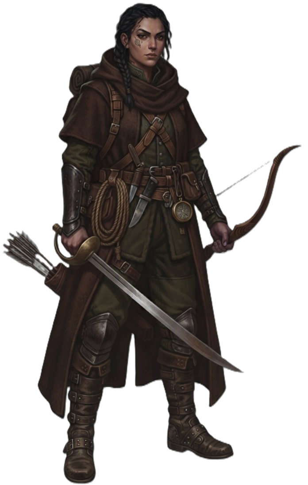

| Rolle | Hybrid-Kämpfer (Nahkampf + Fernkampf) · Halbzauberer (Naturmagie) · Späher · Fährtenleser |
| Zauberertyp | Halbzauberer Zauberslots ab L2 (max Rang 5) |
| Primärer Schadensattribut | Geschick (DEX) |
| Sekundärer Schadensattribut | Weisheit (WIS) |
| Zauberattribut | Weisheit (WIS) |
| TP (L1) | 10 |
| TP pro Level | 6 |
| Rüstung | Mittel (alle Rüstungen) |
| Waffen | Primalwaffen — ein- und zweihändig nutzbar: Schwerter, Äxte, Keulen, Dolche, Speere, Bögen, Armbrüste, Wurfwaffen, Stäbe |
| Rettungswürfe | Geschick (DEX), Weisheit (WIS) |
| Attributsteigerung (Level) | 4, 8, 12, 16 |
| Fertigkeiten (3 zur Auswahl) | Wahrnehmung, Überleben, Naturkunde, Tierführung, Nachforschung, Schleichen, Akrobatik |
Der WALDLÄUFER ist ein naturverbundener Hybrid-Kämpfer, der alle drei Kampfstile vereint: Nahkampf mit Schwert, Axt oder Speer, Fernkampf mit Bogen oder Armbrust, und Naturmagie als Halbzauberer. Er ist mit Bogen und Klinge gleichermaßen vertraut und wechselt frei zwischen den Reichweiten, je nachdem was die Situation erfordert. Wo der JAEGER auf Begleiter und Fallen setzt, vertraut der WALDLÄUFER auf Naturzauber — Wurzeln die Gegner festhalten, Nebel der die Sicht blockiert, Dornen die aus dem Boden schießen. Seine Naturmagie ergänzt die Waffenkünste — Kontrolle, Heilung, Mobilität und Unterstützung statt reinen Zerstörungszaubern. Sein Bevorzugter Feind macht ihn zum Spezialisten gegen bestimmte Gegnertypen, Fährtenlesekunst und Naturkunde machen ihn zum idealen Späher. Er ist flexibel, anpassungsfähig und überlebt in jeder Umgebung — ein Allrounder, der nie aufhilft.
| Level | Fähigkeit | Beschreibung |
|---|---|---|
| L1 | Bevorzugter Feind | Passiv: +ProficiencyBonus Schaden gegen gewählte Feindtypen, Vorteil auf Fährtenlesen. (Gewählt beim Level-Up via Feat-Auswahl.) |
| L1 | Naturkundiger | Passiv: Kein schwieriges Gelände, Vorteil auf Initiative, keine Überraschung in bevorzugtem Gelände. |
| L2 | Kampfstil | Wähle einen von 6 Kampfstilen (siehe unten). |
| L3 | Urzeitliche Wahrnehmung | 1 Zauberslot: 1 Minute lang Kreatur-Typen in 1 Meile Entfernung erkennen. |
| L5 | Zusatzangriff | 2 Angriffe pro Angriffs-Aktion — funktioniert Nah- und Fernkampf. |
| L6 | Natürlicher Widerstand | Passiv: Resistenz (50% Schadensreduktion) gegen einen wählbaren Schadenstyp. |
| L7 | Waldlaeufer-Instinkt | Passiv: +2 Weisheit — skaliert Zauber-Rettungswurf-SG und Begleiter-Fähigkeiten. |
| L8 | Landritt | Passiv: Ignoriert schwieriges Gelände (natürlich), ignoriert nichtmagische Pflanzen-Magie. |
| L10 | In der Ebene verstecken | 1 Minute Vorbereitung: +10 auf Schleichen-Proben. |
| L11 | Bedingter Bonus-Angriff | 1/Zug: Bonus-Angriff nach einem erfolgreichen Treffer. |
| L14 | Verbesserte Tarnung | Passiv: Vorteil auf Schleichen-Proben, auch in offenem Gelände. |
| L18 | Wilde Sinne | Passiv: Keine Angriffs-Vorteil gegen dich (Unsichtbar/Versteckt-Gegner erhalten keinen Vorteil). |
| L20 | Feindtöter | 1/Zug: +Weisheits-Modifikator auf Angriff oder Schaden gegen Bevorzugten Feind. |
| Stil | Beschreibung |
|---|---|
| Schießen (Archery) | +2 auf Angriffswürfe mit Fernkampfwaffen. |
| Verteidigung (Defense) | +1 RK wenn du Rüstung trägst. |
| Duellieren (Dueling) | +2 Schaden mit Einhandwaffe, andere Hand frei. |
| Zweihandkampf (GWF) | Neu würfeln von 1en und 2en auf Schadenswürfeln mit Zweihandwaffen. |
| Schutz (Protection) | Reaktion: Reduziere Schaden eines Angriffs gegen Verbündeten innerhalb 5ft (Schild nötig). Gewährt die PROTECTION-Ability. |
| Zweiwaffenkampf (TWF) | Ability-Modifikator wird auf Off-Hand-Schaden addiert. |
| Fähigkeit | Aktion | Nutzung | Level | Beschreibung |
|---|---|---|---|---|
| Heilung der Natur | Aktion | Zauberslot | L2 | NATUR Berühre einen Verbündeten: heile 2W4+2 TP. Upcast: +1W4 pro Slot. |
| Tiergespräch | Aktion | Zauberslot | L2 | Kommuniziere mit Tieren — RP-Effekt für Erkundung und Information. |
| Nebelwolke | Aktion | Zauberslot | L2 | NATUR Beschwöre eine 10ft Nebelzone die die Sicht für 1 Minute blockiert. |
| Dornenhagel | Aktion | Zauberslot | L2 | NATUR Dornen schießen aus dem Boden: 2W6 Stichschaden + RESTRAINED (STR-Rettungswurf). Upcast: +1W6 pro Slot. |
| Schnellfuß | Aktion | Zauberslot | L3 | NATUR +30ft Bewegungsrate für 1 Minute. |
| Wurzelgriff | Aktion | Zauberslot | L3 | NATUR Wurzeln greifen alle Gegner in 10ft — STR-Rettungswurf oder festgehalten (GRAPPLED). |
| Pfeil der Stürme | Aktion | Zauberslot | L3 | STURM Fernkampfangriff: 3W8 Schaden + Kette auf 2 weitere Gegner. Upcast: +1W8 pro Slot. |
| Steinhaut | Aktion | Zauberslot | L5 | NATUR Verbündeter erhält +2 RK für 1 Minute. |
| Eiswind | Aktion | Zauberslot | L5 | FROST Kegel: 4W6 Frostschaden + DEX-Rettungswurf für halben Schaden. Upcast: +1W6 pro Slot. |
| Ruf der Wildnis | Aktion | Zauberslot | L7 | NATUR Beschwöre einen Naturgeist als Begleiter für 1 Minute. |
| Fähigkeit | Auslöser | Nutzung | Beschreibung |
|---|---|---|---|
| Schutz | Verbündeter in 5ft wird angegriffen | 1/Zug | Nutze deinen Schild um den Schaden eines Angriffs gegen einen Verbündeten in 5ft zu halbieren. |
| Fähigkeit | Beschreibung |
|---|---|
| Natürlicher Widerstand | PASSIV Resistenz gegen einen wählbaren Schadenstyp. |
| Landritt | PASSIV Du kannst durch schwieriges Gelände bewegen ohne Bewegung zu verlieren. |
| Ressource | Mechanik | Verfügbarkeit |
|---|---|---|
| Zauberslots | Halbzauberer-Progression (Rang 1–5). Zauberattribut: WIS. | Alle Zauber, pro Zauberslot |
| Bevorzugter Feind | +ProficiencyBonus Schaden gegen gewählte Feindtypen (hardcoded) | Ab L1, passiv |
| Feindtöter | 1/Zug: +WIS-Mod auf Angriff/Schaden gegen Bevorzugten Feind | Ab L20, pro Zug |